Một số địa điểm du lịch nổi tiếng tại Đà lạt

Nằm ở phía Nam của Việt Nam, Đà Lạt được biết đến như một thành phố du lịch nổi tiếng nên đến một lần trong đời. Thành phố miền núi xinh đẹp và từng là nơi nghỉ dưỡng cao cấp dưới thời Pháp thuộc thu hút biết bao kẻ si tình.
Cũng từ đó, top các địa điểm du lịch Đà Lạt luôn trở thành đề tài thu hút nhiều người quan tâm. Bạn có thể dễ dàng tìm thấy rất nhiều phong cách kiến trúc kiểu cũ tuyệt đẹp trên khắp các con đường ở Đà Lạt.
Các khu vực xung quanh thành phố cũng có rất nhiều phong cảnh rất đẹp như hồ nước, vườn hoa, các khu rừng và thị trấn cổ kính,… khiến ai cũng đắm say. Cùng khám phá 15 điểm đến đáng trải nghiệm khi ghé thăm thành phố này nhé.
MỤC LỤC
12.
QUE Garden1. Thác Datanla
- Địa chỉ: QL20, Đèo Prenn, Phường 3, TP. Đà Lạt.
- Giờ mở cửa tham khảo: 07:00 - 17:00.
- Giá vé tham khảo: 50.000 VND/người lớn và 25.000 VND/trẻ em, không bao gồm giá tham gia các trò chơi.
Mang vẻ đẹp hoang sơ và hùng vĩ của núi rừng Tây Nguyên, thác Datanla là điểm dừng chân lý tưởng cho những ai yêu khám phá và là tín đồ của thể thao mạo hiểm. Với nhiều trò chơi được chia thành đa dạng cấp độ từ dễ đến khó, du khách có thể lựa chọn hoạt động phù hợp với tình trạng sức khỏe cũng như độ tuổi của mình.
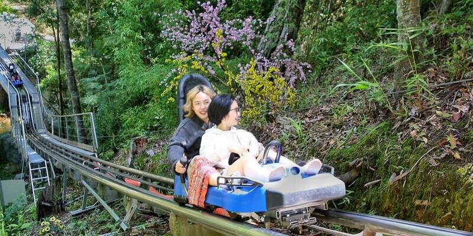Đừng ngại ngần thử một lần đu dây vượt qua thác nước tung trắng xóa và thử sức bền khi theo từng bậc đá để chinh phục đỉnh thác.
Hay nhẹ nhàng hơn, bạn có thể vi vu trên máng trượt xuyên rừng thông với những khúc cua đầy kích thích, đu zipline băng rừng, hay chèo thuyền vượt thác vui nổ trời. Vừa chơi thả ga, vừa ngắm cảnh thác nước và thiên nhiên trong lành, đây đích thực là cuộc “đi trốn”giúp bạn giải tỏa mọi áp lực và muộn phiền.
2. Núi Lang Biang
- Địa chỉ: Thị trấn Lạc Dương, huyện Lạc Dương, Lâm Đồng.
- Giờ mở cửa tham khảo: 07:00 - 17:00.
- Giá vé tham khảo: 50.000 VND/người lớn và 25.000 VND/trẻ em. Ngoài ra du khách có thể mua thêm vé xe jeep lên đỉnh với giá 100.000 VND/khách.
Nhắc đến Đà Lạt, chắc hẳn ai cũng đã quá quen thuộc với cái tên Lang Biang - ngọn núi cao nhất thành phố sương mù, cùng với khu du lịch nghỉ dưỡng đậm đà sắc màu tây nguyên.
Tại đây, bạn sẽ chinh phục đỉnh Ra-đa ngoạn mục và ngắm toàn cảnh Đà Lạt với sắc thông bạt ngàn từ trên cao, tận hưởng không khí se lạnh và nhâm nhi ly cà phê đậm đà chillax.
Nếu có nhiều thời gian hơn, bạn hãy nghỉ lại đây một đêm, đốt lửa trại, thưởng thức đặc sản rượu cần ấm nóng và hòa theo từng điệu múa, lời ca cổ truyền. Tất cả sẽ là những trải nghiệm có 1-0-2 khiến bạn khó thể nào quên.
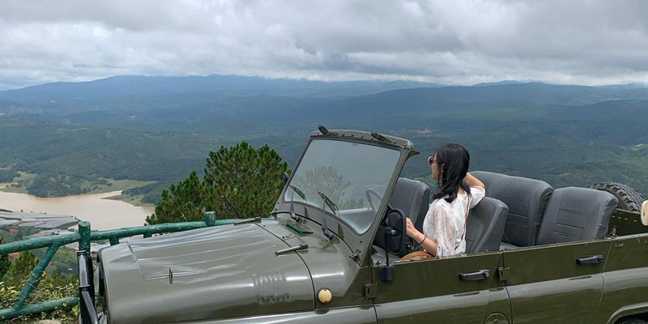3. Vườn thú Zoodoo
- Địa chỉ: Xã Đạ Nhim, huyện Lạc Dương, Lâm Đồng.
- Giờ mở cửa tham khảo: 08:00 - 18:00.
- Giá vé tham khảo: 100.000 VND/người lớn, 50.000 VND/trẻ em cao từ 0.9 - 1.2m.
Nằm trong địa phận của núi Lạc Dương, vườn thú Zoodoo sẽ đưa bạn đến một không gian ngập tràn những loài vật đáng yêu và những trải nghiệm, tương tác thú vị.
Trải rộng trên diện tích 16ha, nơi đây sở hữu hệ thống sở thú đạt chuẩn quốc tế, là nơi sinh sống của hơn 10 giống loài đáng yêu như lạc đà alpaca, ngựa lùn pony, kangaroo,... Không chỉ được ngắm nhìn, du khách sẽ được học cách cho ăn, chạm nhẹ vào những người bạn nhỏ này và chụp ảnh lưu giữ kỷ niệm.
Mách nhỏ là số lượng vé trong ngày tại Zoodoo là có giới hạn nên bạn hãy đặt vé trước nhé!
4. Vườn ánh sáng Lumiere
- Địa chỉ: 222B Mai Anh Đào, phường 8, TP. Đà Lạt.
- Giờ mở cửa tham khảo: 08:00 - 22:00.
- Giá vé tham khảo: 150.000 VND/người lớn và 100.000 VND/trẻ em.
Nếu bạn đang tìm kiếm một địa điểm check in “chất lừ” và siêu trendy tại Đà Lạt thì không thể nào bỏ qua vườn ánh sáng Lumiere siêu hot. Đến đây, du khách sẽ được mãn nhãn với các màn trình diễn ánh sáng, công nghệ trình chiếu hiện đại và nghệ thuật sắp đặt đầy đặc sắc, tựa như bước vào xứ sở Alice đầy bí ẩn. Bao gồm 9 căn phòng với 9 chủ đề khác nhau, bạn hãy chuẩn bị một chiếc máy ảnh thật đầy pin để thỏa thích sống ảo với những background độc đáo này!
Hãy cùng khám phá thế giới đảo ngược có 1-0-2, lạc bước trong buổi tiệc ánh sáng và không khỏi trầm trồ khi bước chân vào không gian 3D mới lạ hay nhà bóng khổng lồ.
5. Vườn cổ tích Tulu Tula
- Địa chỉ: QL 20, xã Xuân Trường, Lâm Đồng.
- Giờ mở cửa tham khảo: 06:00 - 18:00.
- Giá vé tham khảo: 80.000 VND/người.
Chỉ mới xuất hiện gần đây, Tulu Tula đã gây sốt trong cộng đồng du lịch bởi không gian và phong cách bài trí đậm sắc màu cổ tích.
Nằm trên ngọn đồi rộng 6.000m2, nơi đây hoàn toàn xứng đáng với tên gọi “thiên đường sống ảo” với núi rừng và vô vàn tiểu cảnh lạ mắt như TV khổng lồ, chiếc giường phao nằm giữa hồ cá lãng mạn, ghế nan giữa góc vườn xanh cây, những bức tượng điêu khắc khổng lồ, hay các mảng tường rêu bám bụi,...
Đặc biệt, khi mua vé vào cổng, bạn sẽ được nhận thêm 1 ly nước tự chọn với menu đa dạng và hương vị khá ổn áp.
6. Đồi Robin
- Địa chỉ: Hẻm Đống Đa, phường 3, TP. Đà Lạt.
- Giờ mở cửa tham khảo: 07:00 - 17:00.
- Giá vé tham khảo:
- Vé khứ hồi: 100.000 VND/người lớn và 70.000 VND/trẻ em.
- Vé một chiều: 80.000 VND/người và 60.000 VND/trẻ em.
Đồi Robin hay còn gọi với cái tên là Đồi Cáp Treo là nơi bạn có thể ngắm trọn vẹn cảnh thành phố ngàn hoa từ trên cao. Ngồi trên cabin, bạn sẽ trải qua hành trình 12 phút vô cùng tuyệt vời khi thu vào tầm mắt khung cảnh núi rừng hùng vĩ, những căn nhà kính, các biệt thự Pháp cổ nổi bật hay sắc hoa điểm xuyết như một bảng pallet đủ sắc màu.
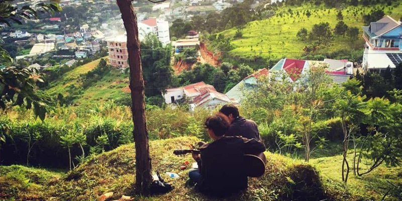Không chỉ vậy, đồi còn là một tọa độ săn mây cực hot - nơi bạn có thể đón bình minh tuyệt đẹp ngay tại vị trí gần trung tâm thành phố.
7. Hồ Tuyền Lâm
- Địa chỉ: Tổ 18 khu du lịch Tuyền Lâm, đường Hoa Cẩm Tú Cầu, phường 3, TP. Đà Lạt.
- Giờ mở cửa tham khảo: Mọi thời điểm
- Giá vé tham khảo: Miễn phí
Nhắc đến Đà Lạt, ắt hẳn bạn sẽ không hề xa lạ với hồ Tuyền Lâm - hồ nước nhân tạo lớn nhất thành phố sương mù. Bao quanh là rừng thông xanh rì và không gian trong lành, nơi đây là một địa điểm nghỉ dưỡng hoàn hảo để đi trốn khỏi thành thị xô bồ.
Vậy chơi gì ở hồ Tuyền Lâm? Bạn có thể tận hưởng một buổi sáng đi thuyền du ngoạn quanh cảnh hồ, chèo thuyền hay đạp vịt vui nổ trời, câu cá hoặc cắm trại chill chill, nhâm nhi ly cà phê bên bờ hồ cực thơ,...
8. Cổng trời Bali Green Hills
- Địa chỉ: khu du lịch Cáp Treo Đà Lạt, phường 3, TP. Đà Lạt.
- Giờ mở cửa tham khảo: 07:00 - 18:00.
- Giá vé tham khảo: Miễn phí
Như chính cái tên của mình, cổng trời Bali Green Hills mang đến một Bali thu nhỏ với những địa danh tưởng chừng chỉ có thể bắt gặp tại quốc đảo xinh đẹp này. Từ cổng trời giữa không gian cây rừng cho đến những tổ chim khổng lồ, view cà phê từ trên đồi cao, góc nào cũng đẹp, cũng cực kỳ ăn tiền.
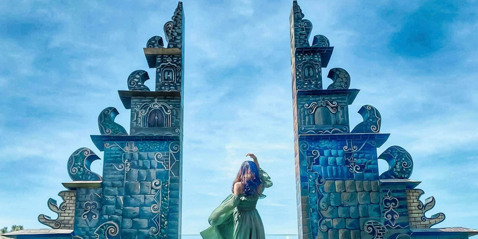Chuẩn bị một bộ váy dài thướt tha, trang điểm thật xinh đẹp, bạn đã sẵn sàng để có một bộ ảnh khiến “chúng bạn” trầm trồ? Lưu ý nhỏ là thời điểm đẹp nhất để thăm quan Bali Green Hills chính là buổi sáng, khi trời còn mát mẻ và nắng đẹp.
9. An Sơn Hồ
- Địa chỉ: Tổ 20, đường An Sơn, phường 4, TP. Đà Lạt.
- Giờ mở cửa tham khảo: 09:00 - 23:00.
- Giá vé tham khảo: Miễn phí
Mang đến không khí tựa như lạc vào Phượng Hoàng Cổ Trấn, An Sơn Hồ - một nhà hàng với các bungalow view hồ cực chất - đã thu hút một lượng lớn khách du lịch đến và check in. Những ngôi nhà chòi lợp lá, cây cầu gỗ bắt qua hồ, các bức tường dựng từ tre nứa và trang trí bằng đèn lồng đỏ. Tất cả đều tạo nên những thước ảnh tựa như phim cổ trang.
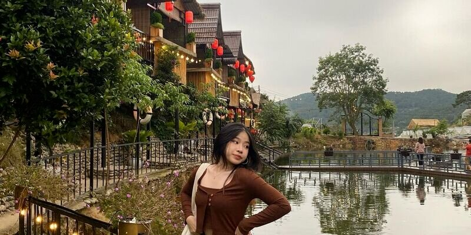Đến đây, đừng chỉ mãi check in mà quên thưởng thức đặc sản Tây Nguyên ngon quên sầu đấy nhé! Một số món ngon tại An Sơn Hồ khiến du khách tấm tắc đó là gà nướng cơm lam, lẩu cá tầm, cá tầm nướng muối ớt,...
10. Đường Hầm Điêu Khắc
- Địa chỉ: Khu du lịch hồ Tuyền Lâm, phường 4, TP. Đà Lạt.
- Giờ mở cửa tham khảo: 07:00 - 17:00.
- Giá vé tham khảo: 60.000 VND/người lớn và 30.000 VND/trẻ em.
Đường hầm Điêu Khắc là một công trình xây dựng hoành tráng và kỳ công bậc nhất Đà Lạt, được công nhận là con đường hầm được làm bằng đất sét dài nhất thế giới.
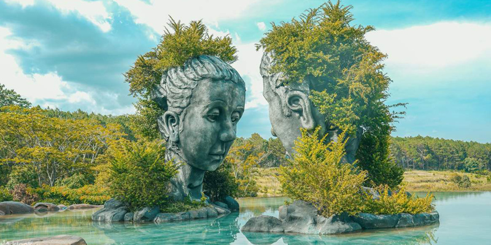Qua bàn tay tài năng của các nghệ nhân, các khối đất sét ở đây được nhào nặn thành những hình hài độc đáo, từ tái hiện lại khung cảnh Đà Lạt ngày xưa cho đến những địa danh nổi tiếng nơi đây như Nhà thờ Con Gà, Viện Pasteur, hồ Tuyền Lâm,...
Đặc biệt, tại đây vừa khai trương một khu vực mới đã khiến cộng đồng xôn xao và săn đón - Hồ Vô Cực. Với cách bài trí với 2 tượng đất sét khổng lồ, hồ nước xanh trong và cỏ cây um tùm, không gian vintage này hứa hẹn sẽ trở thành một địa điểm check in siêu hot.
11. Khu du lịch Lá Phong
- Địa chỉ: 45 Đặng Thái Thân, phường 3, TP. Đà Lạt.
- Giờ mở cửa tham khảo: 08:00 - 17:00.
- Giá vé tham khảo: 50.000 VND/người lớn và 35.000 VND/trẻ em.
Như lạc vào vườn địa đàng, khu du lịch Lá Phong sở hữu cho mình một không gian rợp bóng cây với 20.000 cây tùng, 2.000 cây lá phong, 500 cây anh đào và 1 vườn bonsai đủ hình thù.
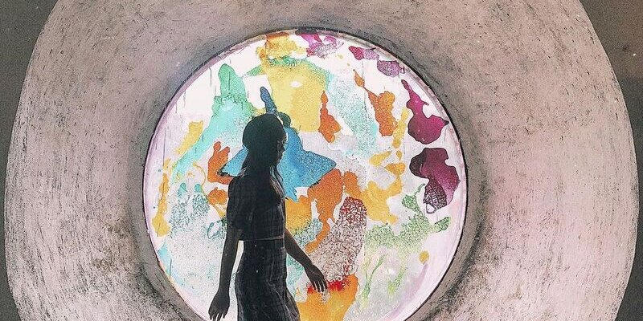Và để phục vụ nhu cầu chụp ảnh của du khách, bên cạnh rừng cây đủ giống loài, nơi đây còn có nhà mái ngói với thiết kế mô phỏng kim tự tháp hoành tráng, các ô cửa sổ tròn độc đáo, quán cà phê Kokoro đầy chất thơ hay hồ cá Koi siêu hoành tráng,...
Nếu có cơ hội, bạn hãy thử thuê một bộ trang phục Nhật Bản để sống ảo nhé, MoMo tin chắc là bạn sẽ không hề thất vọng.
12. QUE Garden
- Địa chỉ: Đèo Mimosa, phường 10, TP. Đà Lạt.
- Giờ mở cửa tham khảo: 07:00 - 17:00.
- Giá vé tham khảo: 70.000 VND/người.
Là tín đồ của các loài hoa và cây xanh, bạn nhất định phải ghé thăm QUE Garden - khu vườn bonsai lá kim lớn nhất Việt Nam - để tận mắt ngắm nhìn các tác phẩm nghệ thuật từ bàn tay của người thợ làm vườn chuyên nghiệp. Sở hữu diện tích lên đến 20.000m2 và nằm dưới chân đèo Mimosa, địa điểm này được ví von là chốn bồng lai tiên cảnh khi có cây, có hoa khoe sắc, có hồ nước yên ả và kiến trúc đậm chất Nhật Bản.
Chụp ảnh, nhâm nhi cà phê, thưởng thức phong cảnh hữu tình và trò chuyện cùng nhau; một buổi chiều se lạnh và chill như thế này thì còn gì bằng.
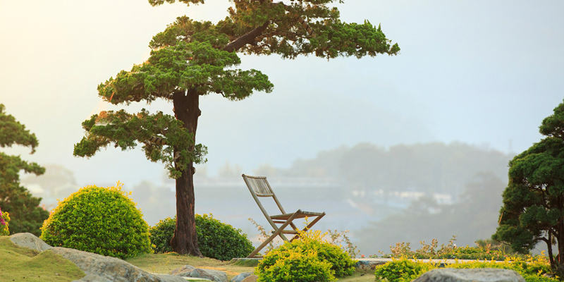13. Nhà Thờ Domaine De Marie
- Địa chỉ: 1 Ngô Quyền, phường 6, TP. Đà Lạt.
- Giờ mở cửa tham khảo: Cả ngày.
- Giá vé tham khảo: Miễn phí
Không chỉ là một địa điểm tôn giáo nổi tiếng, nhà thờ Domaine De Marie còn gây ấn tượng bởi lối kiến trúc đậm chất Châu Âu, mang sắc đỏ hồng cổ điển nhưng lại không hề lỗi thời.
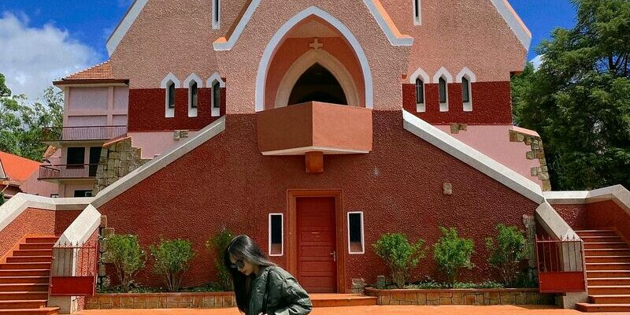Mái ngói hình chóp liên tưởng đến nhà rông Tây Nguyên, cửa sổ hình hoa hồng chiếu rọi ánh nắng xuống thánh đường, những tấm kính màu,... Mọi chi tiết đều rất tỉ và sắp đặt đầy nghệ thuật.
Đến tu viện, bên cạnh việc “sống ảo” cháy máy với background không góc chết, du khách còn có thể đi dạo trong khuôn viên đầy hoa cỏ, tham dự lễ và thăm các bạn nhỏ mồ côi đang sinh sống tại đây.
14. Biệt Điện Trần Lệ Xuân
- Địa chỉ: 2 Yết Kiêu, phường 5, TP. Đà Lạt.
- Giờ mở cửa tham khảo: 07:30 - 16:30.
- Giá vé tham khảo: 40.000 VND/người.
Tưởng chừng là một địa điểm bị lãng quên, Biệt Điện Trần Lệ Xuân sau khi góp mặt trong nhiều MV ca nhạc đã hot trở lại, khiến bạn không khỏi trầm trồ bởi sự hoài cổ và đẹp đầy bí ẩn.
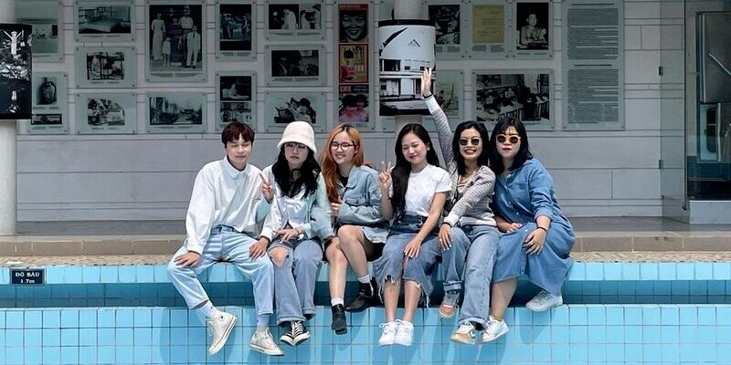Từng được bạn bè bốn phương gọi bằng cái tên “Đệ Nhất Trời Nam”, biệt điện này có gì đặc biệt đến vậy? Bao gồm một khu vườn với nhiều loài cây cỏ được chăm sóc tỉ mỉ, nơi đây sở hữu 3 căn biệt thự với tên gọi khác nhau, mỗi nơi có một vẻ đẹp riêng.
Bạch Ngọc hiện đại với bể bơi nước nóng độc lạ, Lam Ngọc mang vẻ dịu dàng với vườn hoa Nhật Bản và Hồng Ngọc sở hữu chiếc view đắt giá toàn cảnh thành phố.
15. Cung Nam Phương Hoàng Hậu
- Địa chỉ: 4 Hùng Vương, phường 10, TP. Đà Lạt.
- Giờ mở cửa tham khảo: 08:00 - 17:00.
- Giá vé tham khảo: 10.000 VND/người.
Được xây dựng vào năm 1930, cung Nam Phương Hoàng Hậu tọa lạc trên một ngọn đồi tại trung tâm thành phố, là một công trình kiến trúc tiêu biểu cho sự kết hợp hoàn hảo giữa phong cách Pháp cổ và Á Đông.
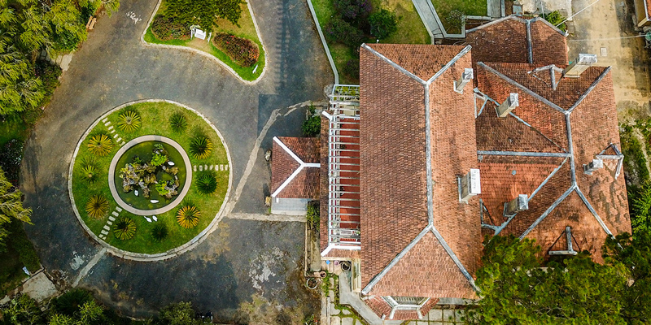Với tổng diện tích sử dụng 500m2 và 3 tầng lầu, cung vẫn giữ được gần như nguyên vẹn phần kiến trúc và nội thất từ phòng khách, phòng ăn cho đến phòng ngủ của nữ chủ nhân. Không chỉ được du hành về quá khứ để tái hiện lại cuộc sống của vị hoàng hậu đáng kính, bạn sẽ còn có cơ hội ngắm nhìn các cổ vật cung đình, tìm hiểu về gia phả nhà Nguyễn và câu chuyện cuộc đời bà.